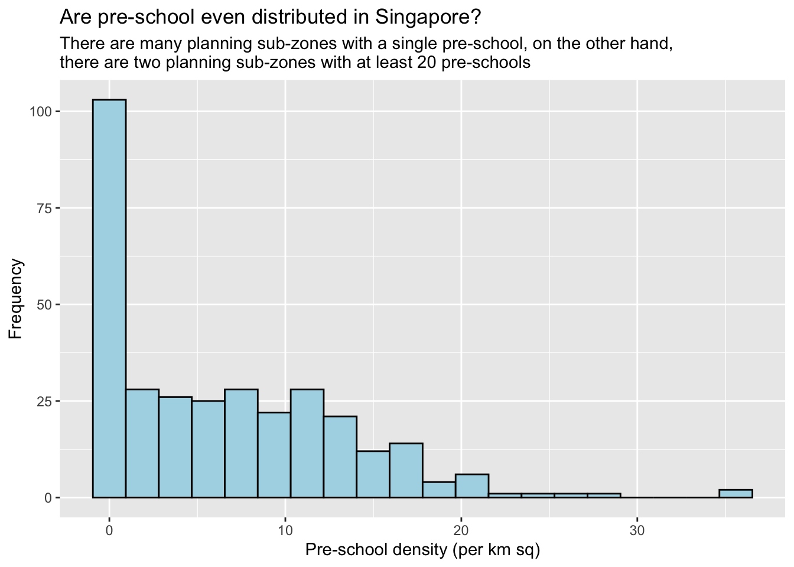

pacman::p_load(sf, tidyverse)Hands-on Ex 1A
Geospatial Data Science with R
1. Overview
This exercise will perform geospatial data science tasks using the sf package in R.
2. Importing Geospatial Data
We will be importing 3 geospatial datasets using st_read():
- Master Plan 2014 Subzone Boundary (Web) from data.gov.sg
- Cycling Paths from LTADataMall
- Preschool Locations from data.gov.sg
Importing polygon feature data in ESRI shapefile format
mpsz <- st_read(dsn = "data/geospatial",
layer = "MP14_SUBZONE_WEB_PL")Reading layer `MP14_SUBZONE_WEB_PL' from data source
`/Users/stephentay/stephentay/ISSS626-Geospatial-Analytics/Hands-on_Ex/Hands-on_Ex01A/data/geospatial'
using driver `ESRI Shapefile'
Simple feature collection with 323 features and 15 fields
Geometry type: MULTIPOLYGON
Dimension: XY
Bounding box: xmin: 2667.538 ymin: 15748.72 xmax: 56396.44 ymax: 50256.33
Projected CRS: SVY21The geospatial objects are multipolygon features. There are a total of 323 multipolygon features and 15 fields in mpsz simple feature data frame. mpsz is in svy21 projected coordinates systems. The bounding box provides the x extend and y extend of the data.
Importing polyline feature data in ESRI shapefile format
cyclingpath <- st_read(dsn = "data/geospatial",
layer = "CyclingPathGazette")Reading layer `CyclingPathGazette' from data source
`/Users/stephentay/stephentay/ISSS626-Geospatial-Analytics/Hands-on_Ex/Hands-on_Ex01A/data/geospatial'
using driver `ESRI Shapefile'
Simple feature collection with 3138 features and 2 fields
Geometry type: MULTILINESTRING
Dimension: XY
Bounding box: xmin: 11854.32 ymin: 28347.98 xmax: 42644.17 ymax: 48948.15
Projected CRS: SVY21There are a total of 3138 features and 2 fields in cyclingpath linestring feature data frame and it is in svy21 projected coordinates system too.
Importing point feature data in kml file format
preschool <- st_read("data/geospatial/PreSchoolsLocation.kml")Reading layer `PRESCHOOLS_LOCATION' from data source
`/Users/stephentay/stephentay/ISSS626-Geospatial-Analytics/Hands-on_Ex/Hands-on_Ex01A/data/geospatial/PreSchoolsLocation.kml'
using driver `KML'
Simple feature collection with 2290 features and 2 fields
Geometry type: POINT
Dimension: XYZ
Bounding box: xmin: 103.6878 ymin: 1.247759 xmax: 103.9897 ymax: 1.462134
z_range: zmin: 0 zmax: 0
Geodetic CRS: WGS 84preschool is a point feature data frame. There are a total of 2290 features and 2 fields. Unlike the other two simple feature data frames, preschool is in wgs84 coordinates system.
3. Checking the Content of A Simple Feature Data Frame
Three ways to retrieve information related to the content of a simple feature data frame are as follows:
The column in the sf data frame that contains the geometries is a list of class sfc. We can retrieve the geometry list-column using mpsz$geom or mpsz[[1]], but a better way is to use st_geometry() as shown below:
st_geometry(mpsz)Geometry set for 323 features
Geometry type: MULTIPOLYGON
Dimension: XY
Bounding box: xmin: 2667.538 ymin: 15748.72 xmax: 56396.44 ymax: 50256.33
Projected CRS: SVY21
First 5 geometries:MULTIPOLYGON (((31495.56 30140.01, 31980.96 296...MULTIPOLYGON (((29092.28 30021.89, 29119.64 300...MULTIPOLYGON (((29932.33 29879.12, 29947.32 298...MULTIPOLYGON (((27131.28 30059.73, 27088.33 297...MULTIPOLYGON (((26451.03 30396.46, 26440.47 303...glimpse() provides a good way to have an overview on all the attributes and data types in the data frame.
glimpse(mpsz)Rows: 323
Columns: 16
$ OBJECTID <int> 1, 2, 3, 4, 5, 6, 7, 8, 9, 10, 11, 12, 13, 14, 15, 16, 17, …
$ SUBZONE_NO <int> 1, 1, 3, 8, 3, 7, 9, 2, 13, 7, 12, 6, 1, 5, 1, 1, 3, 2, 2, …
$ SUBZONE_N <chr> "MARINA SOUTH", "PEARL'S HILL", "BOAT QUAY", "HENDERSON HIL…
$ SUBZONE_C <chr> "MSSZ01", "OTSZ01", "SRSZ03", "BMSZ08", "BMSZ03", "BMSZ07",…
$ CA_IND <chr> "Y", "Y", "Y", "N", "N", "N", "N", "Y", "N", "N", "N", "N",…
$ PLN_AREA_N <chr> "MARINA SOUTH", "OUTRAM", "SINGAPORE RIVER", "BUKIT MERAH",…
$ PLN_AREA_C <chr> "MS", "OT", "SR", "BM", "BM", "BM", "BM", "SR", "QT", "QT",…
$ REGION_N <chr> "CENTRAL REGION", "CENTRAL REGION", "CENTRAL REGION", "CENT…
$ REGION_C <chr> "CR", "CR", "CR", "CR", "CR", "CR", "CR", "CR", "CR", "CR",…
$ INC_CRC <chr> "5ED7EB253F99252E", "8C7149B9EB32EEFC", "C35FEFF02B13E0E5",…
$ FMEL_UPD_D <date> 2014-12-05, 2014-12-05, 2014-12-05, 2014-12-05, 2014-12-05…
$ X_ADDR <dbl> 31595.84, 28679.06, 29654.96, 26782.83, 26201.96, 25358.82,…
$ Y_ADDR <dbl> 29220.19, 29782.05, 29974.66, 29933.77, 30005.70, 29991.38,…
$ SHAPE_Leng <dbl> 5267.381, 3506.107, 1740.926, 3313.625, 2825.594, 4428.913,…
$ SHAPE_Area <dbl> 1630379.27, 559816.25, 160807.50, 595428.89, 387429.44, 103…
$ geometry <MULTIPOLYGON [m]> MULTIPOLYGON (((31495.56 30..., MULTIPOLYGON (…head() allows you to see the first n rows of the data frame.
head(mpsz, n=5)Simple feature collection with 5 features and 15 fields
Geometry type: MULTIPOLYGON
Dimension: XY
Bounding box: xmin: 25867.68 ymin: 28369.47 xmax: 32362.39 ymax: 30435.54
Projected CRS: SVY21
OBJECTID SUBZONE_NO SUBZONE_N SUBZONE_C CA_IND PLN_AREA_N
1 1 1 MARINA SOUTH MSSZ01 Y MARINA SOUTH
2 2 1 PEARL'S HILL OTSZ01 Y OUTRAM
3 3 3 BOAT QUAY SRSZ03 Y SINGAPORE RIVER
4 4 8 HENDERSON HILL BMSZ08 N BUKIT MERAH
5 5 3 REDHILL BMSZ03 N BUKIT MERAH
PLN_AREA_C REGION_N REGION_C INC_CRC FMEL_UPD_D X_ADDR
1 MS CENTRAL REGION CR 5ED7EB253F99252E 2014-12-05 31595.84
2 OT CENTRAL REGION CR 8C7149B9EB32EEFC 2014-12-05 28679.06
3 SR CENTRAL REGION CR C35FEFF02B13E0E5 2014-12-05 29654.96
4 BM CENTRAL REGION CR 3775D82C5DDBEFBD 2014-12-05 26782.83
5 BM CENTRAL REGION CR 85D9ABEF0A40678F 2014-12-05 26201.96
Y_ADDR SHAPE_Leng SHAPE_Area geometry
1 29220.19 5267.381 1630379.3 MULTIPOLYGON (((31495.56 30...
2 29782.05 3506.107 559816.2 MULTIPOLYGON (((29092.28 30...
3 29974.66 1740.926 160807.5 MULTIPOLYGON (((29932.33 29...
4 29933.77 3313.625 595428.9 MULTIPOLYGON (((27131.28 30...
5 30005.70 2825.594 387429.4 MULTIPOLYGON (((26451.03 30...4. Plotting Geospatial Data
plot() is a very handy tool to have a quick look at the geospatial object. For high cartographic quality plot, tmap package is recommended, which will be explored in Hands-on Exercise 1B.
A quick multi-plot visualisation of the geometry against the attributes, up to a reasonable maximum number, is as shown below.
plot(mpsz)Warning: plotting the first 9 out of 15 attributes; use max.plot = 15 to plot
all
We can choose to plot only the geometry by using the code chunk below.
plot(st_geometry(mpsz))
We can also choose to plot the sf object by using a specific attribute as shown in the code chunk below.
plot(mpsz["PLN_AREA_N"])
5. Working with Projection
Map projection is an important property of a geospatial data. In order to perform geoprocessing using two or more geospatial data, we need to ensure that all geospatial data are projected using similar coordinate system.
5.1 Assigning EPSG code to a simple feature data frame
Important
It is important to check the coordinate reference system (CRS) of the source data. One of the common issue that can happen when importing geospatial data into R is that the CRS of the source data was either missing (such as due to missing .proj for ESRI shapefile) or wrongly assigned during the importing process.
Here’s an example where the EPSG code in the mpsz dataset is incorrect. Although mpsz data frame is projected in svy21 but the EPSG of the imported data is 9001. This is the wrong EPSG code because the correct EPSG code for svy21 should be 3414.
st_crs(mpsz)Coordinate Reference System:
User input: SVY21
wkt:
PROJCRS["SVY21",
BASEGEOGCRS["SVY21[WGS84]",
DATUM["World Geodetic System 1984",
ELLIPSOID["WGS 84",6378137,298.257223563,
LENGTHUNIT["metre",1]],
ID["EPSG",6326]],
PRIMEM["Greenwich",0,
ANGLEUNIT["Degree",0.0174532925199433]]],
CONVERSION["unnamed",
METHOD["Transverse Mercator",
ID["EPSG",9807]],
PARAMETER["Latitude of natural origin",1.36666666666667,
ANGLEUNIT["Degree",0.0174532925199433],
ID["EPSG",8801]],
PARAMETER["Longitude of natural origin",103.833333333333,
ANGLEUNIT["Degree",0.0174532925199433],
ID["EPSG",8802]],
PARAMETER["Scale factor at natural origin",1,
SCALEUNIT["unity",1],
ID["EPSG",8805]],
PARAMETER["False easting",28001.642,
LENGTHUNIT["metre",1],
ID["EPSG",8806]],
PARAMETER["False northing",38744.572,
LENGTHUNIT["metre",1],
ID["EPSG",8807]]],
CS[Cartesian,2],
AXIS["(E)",east,
ORDER[1],
LENGTHUNIT["metre",1,
ID["EPSG",9001]]],
AXIS["(N)",north,
ORDER[2],
LENGTHUNIT["metre",1,
ID["EPSG",9001]]]]mpsz3414 <- st_set_crs(mpsz, 3414)Warning: st_crs<- : replacing crs does not reproject data; use st_transform for
thatNotice that the EPSG code is 3414 now.
st_crs(mpsz3414)Coordinate Reference System:
User input: EPSG:3414
wkt:
PROJCRS["SVY21 / Singapore TM",
BASEGEOGCRS["SVY21",
DATUM["SVY21",
ELLIPSOID["WGS 84",6378137,298.257223563,
LENGTHUNIT["metre",1]]],
PRIMEM["Greenwich",0,
ANGLEUNIT["degree",0.0174532925199433]],
ID["EPSG",4757]],
CONVERSION["Singapore Transverse Mercator",
METHOD["Transverse Mercator",
ID["EPSG",9807]],
PARAMETER["Latitude of natural origin",1.36666666666667,
ANGLEUNIT["degree",0.0174532925199433],
ID["EPSG",8801]],
PARAMETER["Longitude of natural origin",103.833333333333,
ANGLEUNIT["degree",0.0174532925199433],
ID["EPSG",8802]],
PARAMETER["Scale factor at natural origin",1,
SCALEUNIT["unity",1],
ID["EPSG",8805]],
PARAMETER["False easting",28001.642,
LENGTHUNIT["metre",1],
ID["EPSG",8806]],
PARAMETER["False northing",38744.572,
LENGTHUNIT["metre",1],
ID["EPSG",8807]]],
CS[Cartesian,2],
AXIS["northing (N)",north,
ORDER[1],
LENGTHUNIT["metre",1]],
AXIS["easting (E)",east,
ORDER[2],
LENGTHUNIT["metre",1]],
USAGE[
SCOPE["Cadastre, engineering survey, topographic mapping."],
AREA["Singapore - onshore and offshore."],
BBOX[1.13,103.59,1.47,104.07]],
ID["EPSG",3414]]5.2 Projection Transformation
Important
It is important to transform data from geographic coordinate system to projected coordinate system. This is because geographic coordinate system is not appropriate if the analysis needs to use distance and/or area measurements.
Here’s an example where we need to transform projection of the preschool dataset from wgs84 to svy21.
Notice that it is in wgs84 coordinate system.
st_geometry(preschool)Geometry set for 2290 features
Geometry type: POINT
Dimension: XYZ
Bounding box: xmin: 103.6878 ymin: 1.247759 xmax: 103.9897 ymax: 1.462134
z_range: zmin: 0 zmax: 0
Geodetic CRS: WGS 84
First 5 geometries:POINT Z (103.8072 1.299333 0)POINT Z (103.826 1.312839 0)POINT Z (103.8409 1.348843 0)POINT Z (103.8048 1.435024 0)POINT Z (103.839 1.33315 0)Projection transformation is the process of projecting a simple feature data frame from one coordinate system to another coordinate system. We use st_transform() to do so.
preschool3414 <- st_transform(preschool,
crs = 3414)
st_geometry(preschool3414)Geometry set for 2290 features
Geometry type: POINT
Dimension: XYZ
Bounding box: xmin: 11810.03 ymin: 25596.33 xmax: 45404.24 ymax: 49300.88
z_range: zmin: 0 zmax: 0
Projected CRS: SVY21 / Singapore TM
First 5 geometries:POINT Z (25089.46 31299.16 0)POINT Z (27189.07 32792.54 0)POINT Z (28844.56 36773.76 0)POINT Z (24821.92 46303.16 0)POINT Z (28637.82 35038.49 0)Notice that it is in svy21 projected coordinate system now.
st_geometry(preschool3414)Geometry set for 2290 features
Geometry type: POINT
Dimension: XYZ
Bounding box: xmin: 11810.03 ymin: 25596.33 xmax: 45404.24 ymax: 49300.88
z_range: zmin: 0 zmax: 0
Projected CRS: SVY21 / Singapore TM
First 5 geometries:POINT Z (25089.46 31299.16 0)POINT Z (27189.07 32792.54 0)POINT Z (28844.56 36773.76 0)POINT Z (24821.92 46303.16 0)POINT Z (28637.82 35038.49 0)6. Importing & Transforming Aspatial Data
6.1 Importing
We will be importing an aspatial dataset:
- Singapore Airbnb listing data from Inside Airbnb
It is aspatial because there are no geospatial objects, but among the data fields, there are two fields that capture the x- and y-coordinates of the data points.
listings <- read_csv("data/aspatial/listings.csv")Rows: 3540 Columns: 75
── Column specification ────────────────────────────────────────────────────────
Delimiter: ","
chr (26): listing_url, source, name, description, neighborhood_overview, pi...
dbl (38): id, scrape_id, host_id, host_listings_count, host_total_listings_...
lgl (6): host_is_superhost, host_has_profile_pic, host_identity_verified, ...
date (5): last_scraped, host_since, calendar_last_scraped, first_review, la...
ℹ Use `spec()` to retrieve the full column specification for this data.
ℹ Specify the column types or set `show_col_types = FALSE` to quiet this message.glimpse(listings)Rows: 3,540
Columns: 75
$ id <dbl> 71609, 71896, 71903, 2753…
$ listing_url <chr> "https://www.airbnb.com/r…
$ scrape_id <dbl> 2.024063e+13, 2.024063e+1…
$ last_scraped <date> 2024-06-29, 2024-06-29, …
$ source <chr> "previous scrape", "city …
$ name <chr> "Ensuite Room (Room 1 & 2…
$ description <chr> "For 3 rooms.Book room 1 …
$ neighborhood_overview <chr> NA, NA, "Quiet and view o…
$ picture_url <chr> "https://a0.muscache.com/…
$ host_id <dbl> 367042, 367042, 367042, 1…
$ host_url <chr> "https://www.airbnb.com/u…
$ host_name <chr> "Belinda", "Belinda", "Be…
$ host_since <date> 2011-01-29, 2011-01-29, …
$ host_location <chr> "Singapore", "Singapore",…
$ host_about <chr> "Hi My name is Belinda -H…
$ host_response_time <chr> "within an hour", "within…
$ host_response_rate <chr> "100%", "100%", "100%", "…
$ host_acceptance_rate <chr> "N/A", "N/A", "N/A", "99%…
$ host_is_superhost <lgl> FALSE, FALSE, FALSE, FALS…
$ host_thumbnail_url <chr> "https://a0.muscache.com/…
$ host_picture_url <chr> "https://a0.muscache.com/…
$ host_neighbourhood <chr> "Tampines", "Tampines", "…
$ host_listings_count <dbl> 6, 6, 6, 49, 49, 6, 7, 49…
$ host_total_listings_count <dbl> 11, 11, 11, 73, 73, 11, 8…
$ host_verifications <chr> "['email', 'phone']", "['…
$ host_has_profile_pic <lgl> TRUE, TRUE, TRUE, TRUE, T…
$ host_identity_verified <lgl> TRUE, TRUE, TRUE, TRUE, T…
$ neighbourhood <chr> NA, NA, "Singapore, Singa…
$ neighbourhood_cleansed <chr> "Tampines", "Tampines", "…
$ neighbourhood_group_cleansed <chr> "East Region", "East Regi…
$ latitude <dbl> 1.34537, 1.34754, 1.34531…
$ longitude <dbl> 103.9589, 103.9596, 103.9…
$ property_type <chr> "Private room in villa", …
$ room_type <chr> "Private room", "Private …
$ accommodates <dbl> 3, 1, 2, 1, 1, 4, 2, 1, 1…
$ bathrooms <dbl> NA, 0.5, 0.5, 2.0, 2.5, N…
$ bathrooms_text <chr> "1 private bath", "Shared…
$ bedrooms <dbl> 2, 1, 1, 1, 1, 3, 2, 1, 1…
$ beds <dbl> NA, 1, 2, 1, 1, NA, 1, 1,…
$ amenities <chr> "[\"Free parking on premi…
$ price <chr> NA, "$80.00", "$80.00", "…
$ minimum_nights <dbl> 92, 92, 92, 180, 180, 92,…
$ maximum_nights <dbl> 365, 365, 365, 999, 999, …
$ minimum_minimum_nights <dbl> 92, 92, 92, 180, 180, 92,…
$ maximum_minimum_nights <dbl> 92, 92, 92, 180, 180, 92,…
$ minimum_maximum_nights <dbl> 1125, 1125, 1125, 1125, 1…
$ maximum_maximum_nights <dbl> 1125, 1125, 1125, 1125, 1…
$ minimum_nights_avg_ntm <dbl> 92, 92, 92, 180, 180, 92,…
$ maximum_nights_avg_ntm <dbl> 1125, 1125, 1125, 1125, 1…
$ calendar_updated <lgl> NA, NA, NA, NA, NA, NA, N…
$ has_availability <lgl> TRUE, TRUE, TRUE, TRUE, T…
$ availability_30 <dbl> 30, 30, 30, 28, 0, 29, 30…
$ availability_60 <dbl> 59, 53, 60, 58, 0, 58, 60…
$ availability_90 <dbl> 89, 83, 90, 62, 0, 88, 90…
$ availability_365 <dbl> 89, 148, 90, 62, 0, 88, 3…
$ calendar_last_scraped <date> 2024-06-29, 2024-06-29, …
$ number_of_reviews <dbl> 19, 24, 46, 20, 16, 12, 1…
$ number_of_reviews_ltm <dbl> 0, 0, 0, 0, 2, 0, 0, 1, 1…
$ number_of_reviews_l30d <dbl> 0, 0, 0, 0, 0, 0, 0, 0, 0…
$ first_review <date> 2011-12-19, 2011-07-30, …
$ last_review <date> 2020-01-17, 2019-10-13, …
$ review_scores_rating <dbl> 4.44, 4.16, 4.41, 4.40, 4…
$ review_scores_accuracy <dbl> 4.37, 4.22, 4.39, 4.16, 4…
$ review_scores_cleanliness <dbl> 4.00, 4.09, 4.52, 4.26, 4…
$ review_scores_checkin <dbl> 4.63, 4.43, 4.63, 4.47, 4…
$ review_scores_communication <dbl> 4.78, 4.43, 4.64, 4.42, 4…
$ review_scores_location <dbl> 4.26, 4.17, 4.50, 4.53, 4…
$ review_scores_value <dbl> 4.32, 4.04, 4.36, 4.63, 4…
$ license <chr> NA, NA, NA, "S0399", "S03…
$ instant_bookable <lgl> FALSE, FALSE, FALSE, TRUE…
$ calculated_host_listings_count <dbl> 6, 6, 6, 49, 49, 6, 7, 49…
$ calculated_host_listings_count_entire_homes <dbl> 0, 0, 0, 0, 0, 0, 1, 0, 0…
$ calculated_host_listings_count_private_rooms <dbl> 6, 6, 6, 49, 49, 6, 6, 49…
$ calculated_host_listings_count_shared_rooms <dbl> 0, 0, 0, 0, 0, 0, 0, 0, 0…
$ reviews_per_month <dbl> 0.12, 0.15, 0.29, 0.15, 0…6.2 Creating a simple feature data frame from an aspatial data frame
Two useful fields we are going to use are latitude and longitude. Note that they are in decimal degree format. As a best guess, we assume that the data is in wgs84 Geographic Coordinate System. We do so by using st_as_sf():
- coords argument: provide the column name of the x-coordinates, followed by the column name of the y-coordinates.
- crs argument: provide the coordinates system in epsg format.
EPSG: 4326is wgs84 Geographic Coordinate System andEPSG: 3414is Singapore SVY21 Projected Coordinate System. You can search for other countries’ epsg code by referring to epsg.io.
A new column called geometry has been added into the data frame, while the longitude and latitude columns have been dropped.
listings_sf <- st_as_sf(listings,
coords = c("longitude", "latitude"),
crs=4326) %>%
st_transform(crs = 3414)
glimpse(listings_sf)Rows: 3,540
Columns: 74
$ id <dbl> 71609, 71896, 71903, 2753…
$ listing_url <chr> "https://www.airbnb.com/r…
$ scrape_id <dbl> 2.024063e+13, 2.024063e+1…
$ last_scraped <date> 2024-06-29, 2024-06-29, …
$ source <chr> "previous scrape", "city …
$ name <chr> "Ensuite Room (Room 1 & 2…
$ description <chr> "For 3 rooms.Book room 1 …
$ neighborhood_overview <chr> NA, NA, "Quiet and view o…
$ picture_url <chr> "https://a0.muscache.com/…
$ host_id <dbl> 367042, 367042, 367042, 1…
$ host_url <chr> "https://www.airbnb.com/u…
$ host_name <chr> "Belinda", "Belinda", "Be…
$ host_since <date> 2011-01-29, 2011-01-29, …
$ host_location <chr> "Singapore", "Singapore",…
$ host_about <chr> "Hi My name is Belinda -H…
$ host_response_time <chr> "within an hour", "within…
$ host_response_rate <chr> "100%", "100%", "100%", "…
$ host_acceptance_rate <chr> "N/A", "N/A", "N/A", "99%…
$ host_is_superhost <lgl> FALSE, FALSE, FALSE, FALS…
$ host_thumbnail_url <chr> "https://a0.muscache.com/…
$ host_picture_url <chr> "https://a0.muscache.com/…
$ host_neighbourhood <chr> "Tampines", "Tampines", "…
$ host_listings_count <dbl> 6, 6, 6, 49, 49, 6, 7, 49…
$ host_total_listings_count <dbl> 11, 11, 11, 73, 73, 11, 8…
$ host_verifications <chr> "['email', 'phone']", "['…
$ host_has_profile_pic <lgl> TRUE, TRUE, TRUE, TRUE, T…
$ host_identity_verified <lgl> TRUE, TRUE, TRUE, TRUE, T…
$ neighbourhood <chr> NA, NA, "Singapore, Singa…
$ neighbourhood_cleansed <chr> "Tampines", "Tampines", "…
$ neighbourhood_group_cleansed <chr> "East Region", "East Regi…
$ property_type <chr> "Private room in villa", …
$ room_type <chr> "Private room", "Private …
$ accommodates <dbl> 3, 1, 2, 1, 1, 4, 2, 1, 1…
$ bathrooms <dbl> NA, 0.5, 0.5, 2.0, 2.5, N…
$ bathrooms_text <chr> "1 private bath", "Shared…
$ bedrooms <dbl> 2, 1, 1, 1, 1, 3, 2, 1, 1…
$ beds <dbl> NA, 1, 2, 1, 1, NA, 1, 1,…
$ amenities <chr> "[\"Free parking on premi…
$ price <chr> NA, "$80.00", "$80.00", "…
$ minimum_nights <dbl> 92, 92, 92, 180, 180, 92,…
$ maximum_nights <dbl> 365, 365, 365, 999, 999, …
$ minimum_minimum_nights <dbl> 92, 92, 92, 180, 180, 92,…
$ maximum_minimum_nights <dbl> 92, 92, 92, 180, 180, 92,…
$ minimum_maximum_nights <dbl> 1125, 1125, 1125, 1125, 1…
$ maximum_maximum_nights <dbl> 1125, 1125, 1125, 1125, 1…
$ minimum_nights_avg_ntm <dbl> 92, 92, 92, 180, 180, 92,…
$ maximum_nights_avg_ntm <dbl> 1125, 1125, 1125, 1125, 1…
$ calendar_updated <lgl> NA, NA, NA, NA, NA, NA, N…
$ has_availability <lgl> TRUE, TRUE, TRUE, TRUE, T…
$ availability_30 <dbl> 30, 30, 30, 28, 0, 29, 30…
$ availability_60 <dbl> 59, 53, 60, 58, 0, 58, 60…
$ availability_90 <dbl> 89, 83, 90, 62, 0, 88, 90…
$ availability_365 <dbl> 89, 148, 90, 62, 0, 88, 3…
$ calendar_last_scraped <date> 2024-06-29, 2024-06-29, …
$ number_of_reviews <dbl> 19, 24, 46, 20, 16, 12, 1…
$ number_of_reviews_ltm <dbl> 0, 0, 0, 0, 2, 0, 0, 1, 1…
$ number_of_reviews_l30d <dbl> 0, 0, 0, 0, 0, 0, 0, 0, 0…
$ first_review <date> 2011-12-19, 2011-07-30, …
$ last_review <date> 2020-01-17, 2019-10-13, …
$ review_scores_rating <dbl> 4.44, 4.16, 4.41, 4.40, 4…
$ review_scores_accuracy <dbl> 4.37, 4.22, 4.39, 4.16, 4…
$ review_scores_cleanliness <dbl> 4.00, 4.09, 4.52, 4.26, 4…
$ review_scores_checkin <dbl> 4.63, 4.43, 4.63, 4.47, 4…
$ review_scores_communication <dbl> 4.78, 4.43, 4.64, 4.42, 4…
$ review_scores_location <dbl> 4.26, 4.17, 4.50, 4.53, 4…
$ review_scores_value <dbl> 4.32, 4.04, 4.36, 4.63, 4…
$ license <chr> NA, NA, NA, "S0399", "S03…
$ instant_bookable <lgl> FALSE, FALSE, FALSE, TRUE…
$ calculated_host_listings_count <dbl> 6, 6, 6, 49, 49, 6, 7, 49…
$ calculated_host_listings_count_entire_homes <dbl> 0, 0, 0, 0, 0, 0, 1, 0, 0…
$ calculated_host_listings_count_private_rooms <dbl> 6, 6, 6, 49, 49, 6, 6, 49…
$ calculated_host_listings_count_shared_rooms <dbl> 0, 0, 0, 0, 0, 0, 0, 0, 0…
$ reviews_per_month <dbl> 0.12, 0.15, 0.29, 0.15, 0…
$ geometry <POINT [m]> POINT (41972.5 3639…7. Geoprocessing with sf package
There are a wide range of geoprocessing (also known as GIS analysis) functions in sf package. Two commonly used functions are:
Scenario: The authority is planning to upgrade the existing cycling path. To do so, they need to acquire 5 meters of reserved land on the both sides of the current cycling path. You need to determine the extent of the land needed to be acquired and their total area.
st_buffer() allows you to compute the 5-meter buffer around the cycling paths.
buffer_cycling <- st_buffer(cyclingpath, dist=5, nQuadSegs = 30)To calculate the total land involved:
buffer_cycling$AREA <- st_area(buffer_cycling)
sum(buffer_cycling$AREA)2218855 [m^2]Scenario: A preschool service group wants to find out the numbers of preschools in each Planning Subzone.
st_intersects() allows you to identify pre-schools located inside each Planning Subzone. We then count and store the number of preschools in each subzone.
mpsz3414$`PreSch Count`<- lengths(st_intersects(mpsz3414, preschool3414))Here’s a summary statistics of the preschool count.
summary(mpsz3414$`PreSch Count`) Min. 1st Qu. Median Mean 3rd Qu. Max.
0.00 0.00 4.00 7.09 10.00 72.00 To identify the subzone with the most number of preschools:
top_n(mpsz3414, 1, `PreSch Count`)Simple feature collection with 1 feature and 16 fields
Geometry type: MULTIPOLYGON
Dimension: XY
Bounding box: xmin: 39655.33 ymin: 35966 xmax: 42940.57 ymax: 38622.37
Projected CRS: SVY21 / Singapore TM
OBJECTID SUBZONE_NO SUBZONE_N SUBZONE_C CA_IND PLN_AREA_N PLN_AREA_C
1 189 2 TAMPINES EAST TMSZ02 N TAMPINES TM
REGION_N REGION_C INC_CRC FMEL_UPD_D X_ADDR Y_ADDR SHAPE_Leng
1 EAST REGION ER 21658EAAF84F4D8D 2014-12-05 41122.55 37392.39 10180.62
SHAPE_Area geometry PreSch Count
1 4339824 MULTIPOLYGON (((42196.76 38... 728. EDA on Density of Preschools by Planning Subzone
To calculate the density of pre-school by planning subzone, we first compute the area of each planning subzone, then divide preschool count by the area.
mpsz3414 <- mpsz3414 %>%
mutate(Area = st_area(.)) %>%
mutate(`PreSch Density` = `PreSch Count`/Area * 1000000)hist(mpsz3414$`PreSch Density`)
ggplot(data=mpsz3414,
aes(x= as.numeric(`PreSch Density`)))+
geom_histogram(bins=20,
color="black",
fill="light blue") +
labs(title = "Are pre-school even distributed in Singapore?",
subtitle= "There are many planning sub-zones with a single pre-school, on the other hand, \nthere are two planning sub-zones with at least 20 pre-schools",
x = "Pre-school density (per km sq)",
y = "Frequency")
A scatterplot showing the relationship between Preschool Density and Preschool Count:
ggplot(data=mpsz3414,
aes(y = `PreSch Count`,
x= as.numeric(`PreSch Density`)))+
geom_point(color="black",
fill="light blue") +
xlim(0, 40) +
ylim(0, 40) +
labs(title = "",
x = "Pre-school density (per km sq)",
y = "Pre-school count")Warning: Removed 2 rows containing missing values or values outside the scale range
(`geom_point()`).